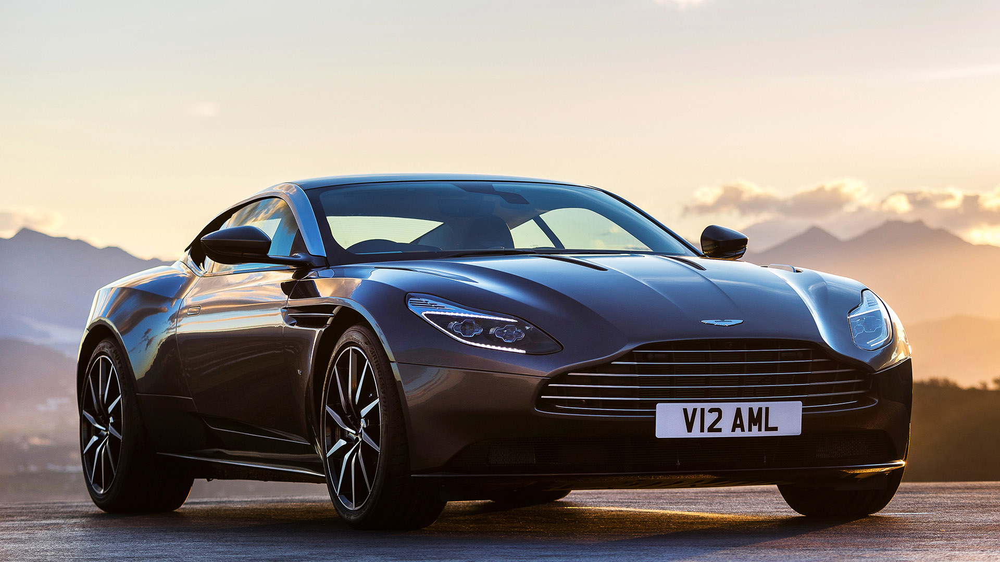DB11
« Porte-étendard spectaculaire d'une nouvelle génération de voitures, la DB11 est la plus puissante et la plus efficace DB de série de toute l'histoire d'Aston Martin.»
Aston Martin N430
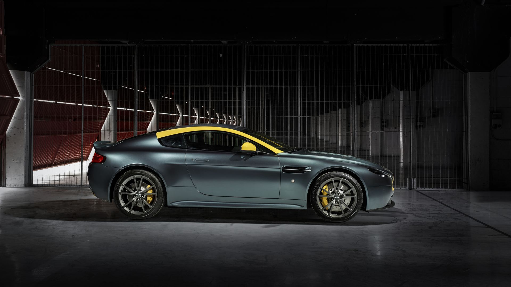
«Les sensations avant tout : Effectivement, ce genre d’auto se destine à une clientèle avertie et passionnée, le verdict sera donc rendu derrière le volant, où seules les sensations comptent. Si nous n’avons pas encore eu la chance de l’essayer, certaines caractéristiques laissent à penser que l’expérience offerte par l’Aston Martin N430 sera bien intéressante.»
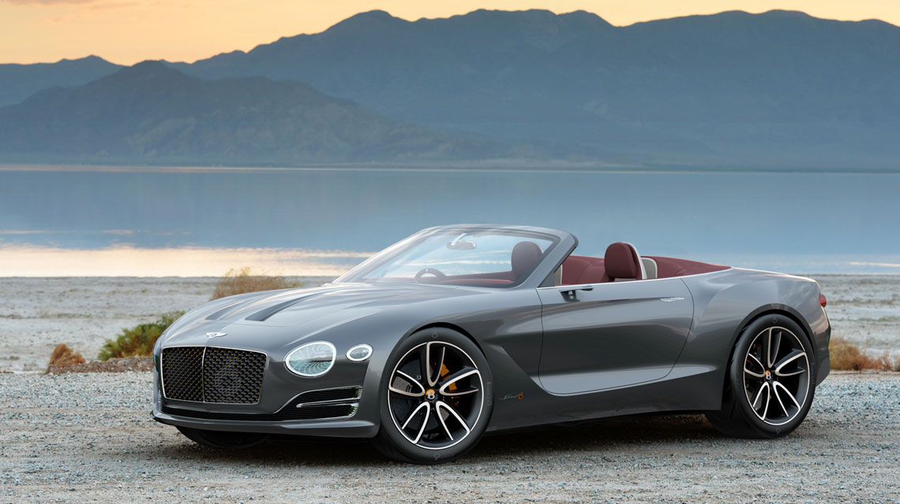
EXP 12 Speed 6e
« Une Bentley tout électrique ne doit concéder aucun compromis sur la qualité, le raffinement et les performances que l’on attend de notre marque de luxe.»
Continental Supersports
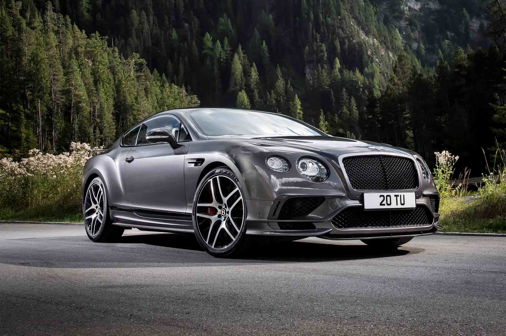
« Le nom Supersports est légendaire chez Bentley. Il a toujours été synonyme de passion et d’exaltation, depuis le tout premier modèle des années 1920, en passant par la Continental Supersports de 2009 et jusqu’à aujourd’hui, avec la troisième héritière de cette lignée emblématique.»

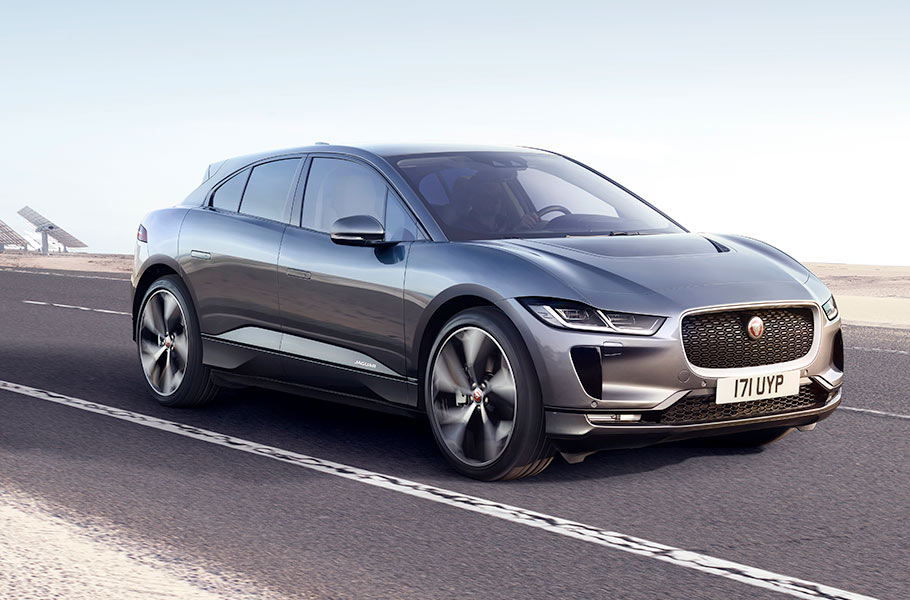Jaguar XJ50
«La XJ redéfinit ce qu'une voiture de luxe doit être. Il s'agit d'une combinaison spectaculaire de beauté, de luxe et de puissance, qui offre une grande souplesse et une expérience de conduite étonnamment dynamique. Du point de vue des passagers, l'habitacle est créé pour offrir espace et confort.»
Jaguar I-pace
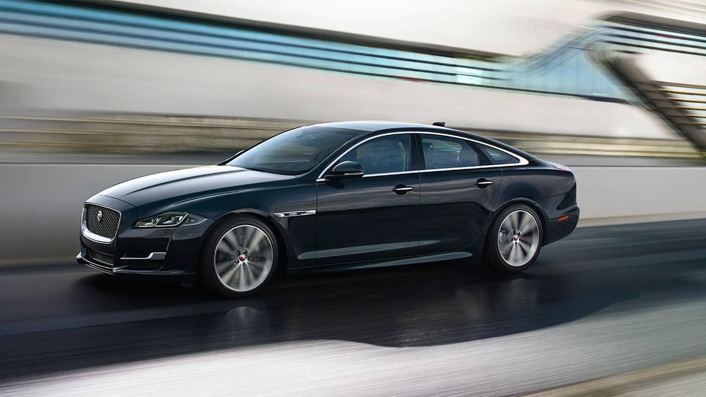
« Toutes les Jaguar ont une identité unique. Cela reste vrai à l'heure du tout-électrique. D'une conception exclusive, la nouvelle Jaguar I-PACE est un véhicule 100% électrique. Agréable à regarder et à conduire, elle se présente comme la voiture de sport cinq places la plus intelligente du monde.»
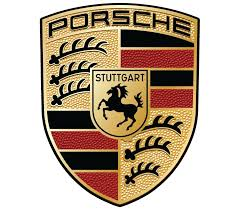
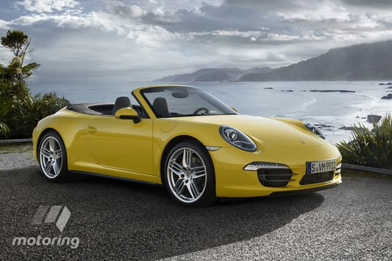911 Carrera 4S Cabriolet
« Et pourtant, nous regardons vers l’avant. Pas ce qui se fait à côté. Pas ce qui est derrière nous. Parce que c’est trop facile de se reposer sur ses lauriers.»
Panamera E-Hybrid
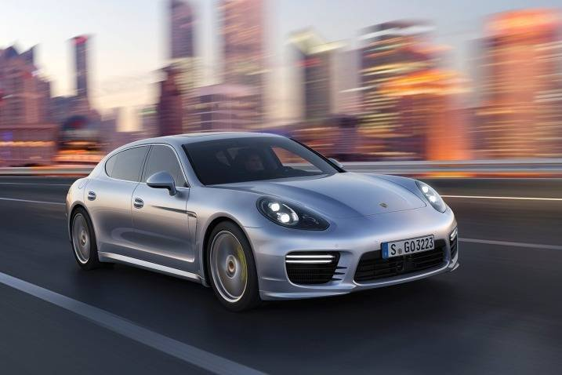
« Avec le concept de la Panamera, nos ingénieurs ont fait preuve d’audace. En remettant tout en question et en se réinventant. En associant des éléments opposés en apparence : performance et confort, dynamisme et efficacité, travail et famille. Le tout en restant fidèle à nos racines, avec le démarreur à gauche et le compte-tours au centre. En résumé : avec l’ADN Porsche. Le résultat ? L’originalité signée Porsche.

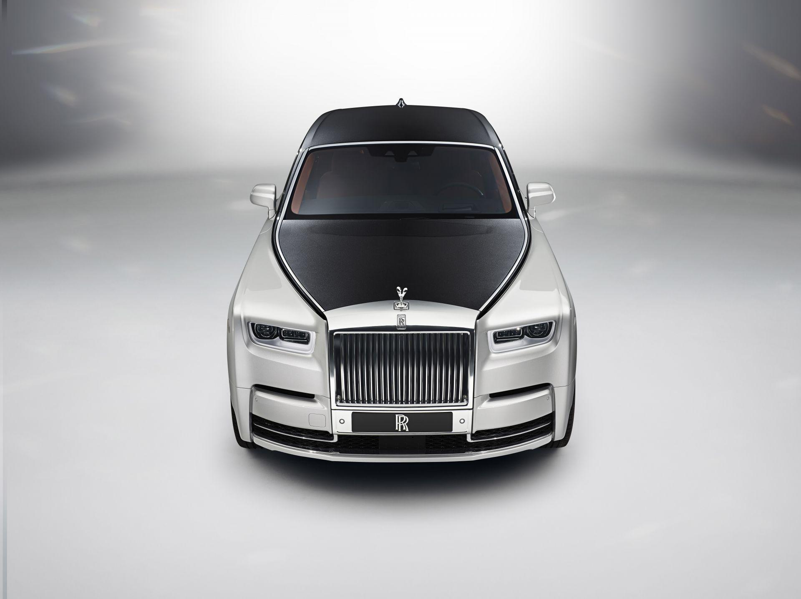Rolls-Royce Phantom
« Alors qu’elle est, depuis 1925, « le choix de prédilection des hommes et des femmes les plus puissants et les plus influents du monde », la nouvelle Rolls-Royce Phantom ouvre un nouveau chapitre dans l’histoire de Rolls-Royce mais aussi dans celle du luxe !»
Rolls Royce Dawn
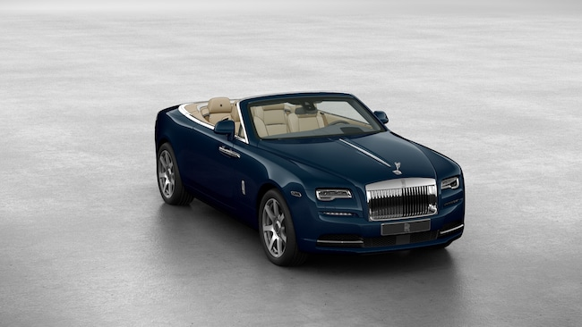
« Qui peut se targuer d’avoir déjà vu une voiture, à la fois, aussi avant-gardiste et classique que la Rolls Royce Dawn. Le nouveau cabriolet du constructeur est prêt à prendre la route, avec les toutes dernières technologies combinées à un design intemporel créé sur mesure.»
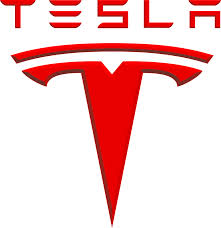
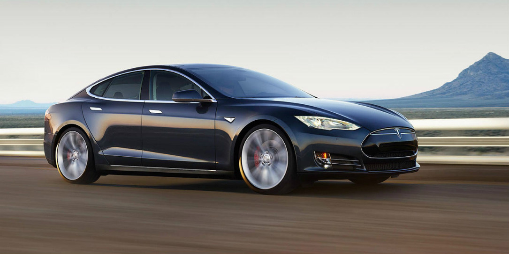P100D La Tesla ultime
« Performances maximales. Equipements haut de gamme.»
Tesla Roadster
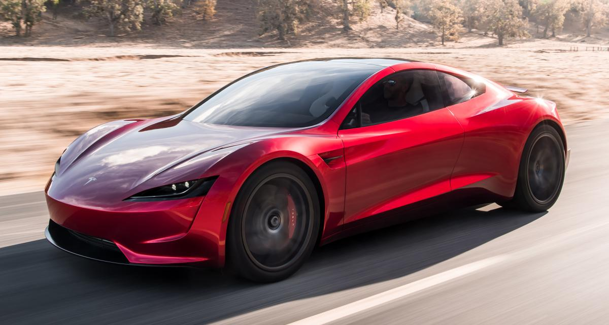
« Conçue pour les performances et l'efficacité aérodynamique. En tant que supercar 100 % électrique, le Roadster maximise le potentiel d'ingénierie aérodynamique —avec des performances et un rendement record.»